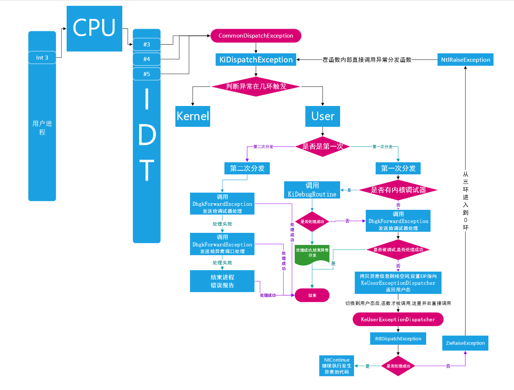
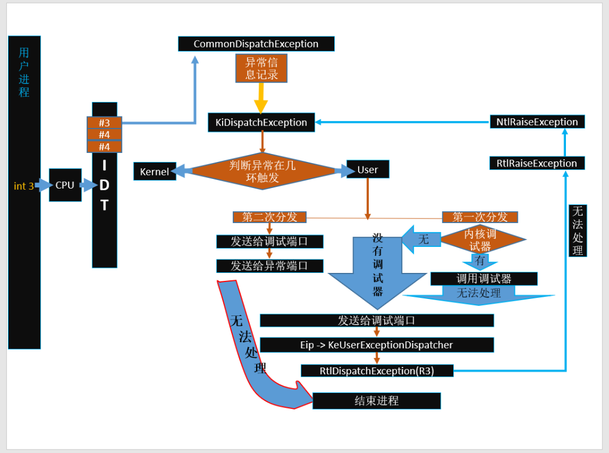
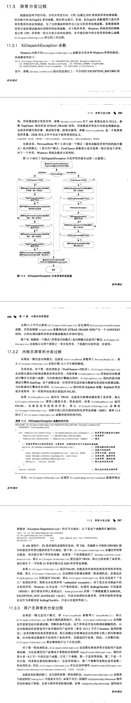
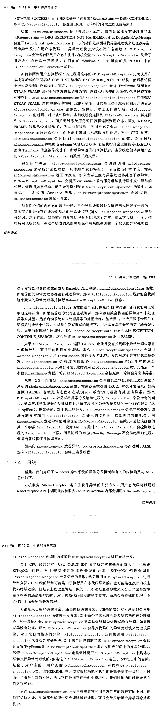

异常处理回顾
如果所有的 SEH 都不能处理异常，那么最后会由谁处理异常
如果 SEH 不能处理异常，异常就会传递给 UEH，UEH 实际上是系统默认的 SEH 调用的。
VCH 处理程序会在什么情况下被调用
只有之前的 SEH VEH 或者 UEH 中的任何一个处理异常，这个函数才会被调用
SEH 是全局有效的么，它们被保存在什么地方
SEH 是线程相关的，保存在了 FS:[0] 内，对应的就是 TEB.NT_TIB.ExceptionList 字段。
UEF 是进程相关，如果任何一个异常处理程序无法处理，就被调用，实际被保存在一个全局的函数指针中。
VEH 和 VCH 是进程相关的，被保存在全局的链表中，两个函数只是保存的标志位不同。
什么是异常，什么是中断
中断通常是由外部设置产生的，例如鼠标键盘等，是一个异步的事件，可以不进行处理。
异常通常是在CPU满足特定的条件时，内部产生的，是一个同步的事件，必须立即进行处理。
异常的种类有哪些，有什么特点？
错误类：通常可修复，异常产生时，eip 指向的是产生异常的指令。
陷阱类：通常可修复，异常产生时，eip 指向的是下一条指令。
终止类：无法修复的，寄存器的指向时没有意义的。
windbg 中分别使用哪些系列的指令查看数据、修改数据、设置断点。
查看数据的指令：db dq da du dw dd dt(查看结构体)
修改数据的指令：eb eq ea eu ew
断点相关的指令：bp bu bl be bd bc
为指定模块加载符号：.reload /f /i demo.exe -> ml
流程相关的一些指令：t(F11) p(F10) g(F5)
陷阱处理器被保存在哪里，windbg中使用什么指令可以查看它。
在 windows 中中断和异常是统一管理的，所有的处理函数都被保存在 CPU相关的 IDT 中，使用 !IDT 可以进行查看。
异常的产生方式有几种，分别是什么？
指令满足特定的条件，CPU 自动触发
用户使用 RaiseException 函数主动的抛出异常
异常分发过程使用的函数以及具体的功能(int 3)
KiTrap03
谁调用的：CPU 产生了异常，从 IDT[3] 找到这个函数并且调用了
调用了谁：ENTER_TRAP(宏) CommonDispatchException(函数)
功能：
- 使用 ENTER_TRAP 宏填充了一个陷阱帧，目的是为了处理异常后继续执行
- 调用了 CommonDispatchException 并传递了相关的参数(异常类型\异常地址\异常参数)
CommonDispatchException
谁调用的：KiTrap03 调用的
调用了谁：KiDispatchException
功能：
- 构建了一个 EXCEPTION_RECORD 结构体，并使用接受的参数填充
- 调用了 KiDispatchException 并传递了相关的参数(先前模式\分发次数\陷阱帧\异常记录)
KiDispatchException
谁调用的：CommonDispatchException 调用的
调用了谁：RtlDispatchException(R0) \ 间接调用 RtlDispatchException(R3) \ KiUserExceptionDispatcher
功能：
当前接收到的异常产生于内核态
- 尝试通过 KiDebugRoutine 将异常信息发送给内核调试器(KD\WINDBG)
- 通过 RtlDispatchException(R0) 函数调用 SEH
- 如果返回 FALSE 则再次尝试将异常信息发送给内核调试器(KD\WINDBG)
- 调用 KeDebugCheck 函数使系统蓝屏并显示错误码
当前接收到的异常产生于用户态
- 如果没有被R3调试，就尝试将异常发送给内核调试器
- 通过 DbgkForwardException 将异常传递给 R3 调试器(OD\x64DBG)
- 在用户栈中填充一个 EXCEPTION_POINTER 结构
- 设置 eip 指向 ntdll 中的函数 KiUserExceptionDispatcher
- 执行到用户代码，在 KiUserExceptionDispatcher 调用 RtlDispatchException(R3)
- 在这个函数的内部会依次调用 VEH SEH UEH (VCH)
- 依然无法处理就执行第二次分发，将异常发送到 调试端口(调试器)\异常端口(子系统)
- 仍然无法处理，就结束进程



